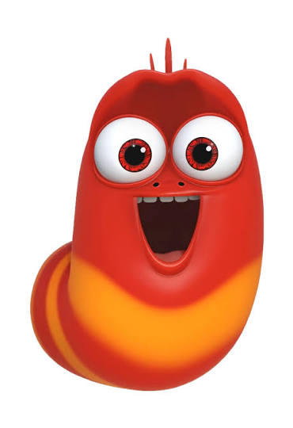
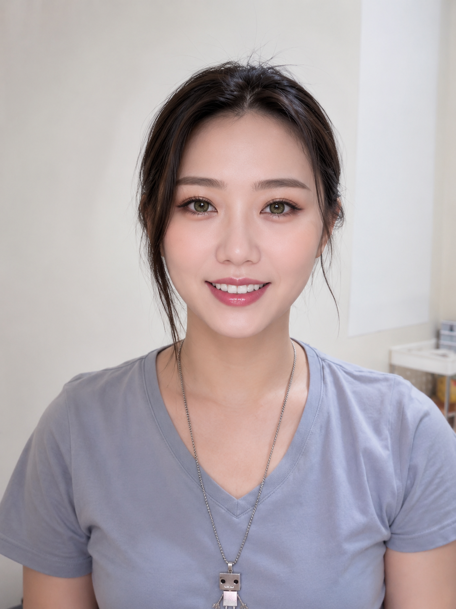
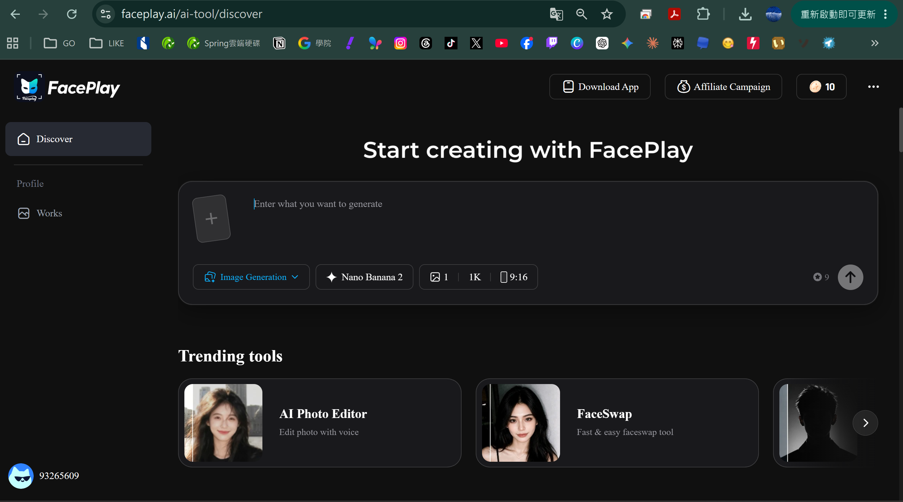
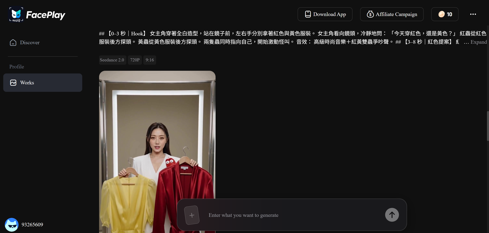
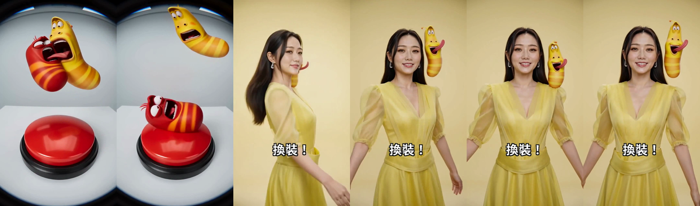

FacePlay：素材生成
- 上傳紅蟲參考圖
- 上傳黃蟲參考圖
- 上傳女主角照片
- 貼入三個以上連續分鏡
- 設定 9:16，直接生成整段影片
不用學剪輯軟體：準備三張參考圖與一份分鏡文字，先用 FacePlay 生成影片，再用日常說話的方式請 Codex 幫你挑片段、加字幕、修改並輸出。
整個流程分成兩個階段：FacePlay 負責依照參考圖與文字生成畫面，Codex 負責把生成結果整理成適合發布的短影音。跟著下面步驟做即可。
準備紅色角色、黃色角色和女主角各一張清楚照片。圖片主體越單純、臉部越清楚，生成結果通常越穩定。


在 Discover 的輸入區加入三張參考圖，選擇影片生成功能，畫面比例設為 9:16。模型名稱與點數可能隨平台更新，實際以當下介面為準。

每個分鏡都寫清楚秒數、人物服裝、角色動作、景別與風格。FacePlay 會把文字稿視為同一支影片的時間順序，而不是三次獨立工作。
生成完成後，先在 Works 檢查人物、紅黃角色、服裝色彩與分鏡銜接。滿意就下載；不滿意可保留同一份文字稿，只針對容易失真的描述調整後再生成一版。

把下面三段文字一起貼進同一個提示詞欄位，不用分三次操作。FacePlay 會依照順序生成開場、紅色造型與黃色造型。
【0–3 秒｜Hook｜雙色抉擇】 一個 9:16 的時尚短影片。一位留著長髮、氣質高雅的亞洲女性，穿著精緻的全白服裝，表情冷靜地站在乾淨的攝影棚鏡子前。她左手拿著一件鮮紅色的衣服，右手拿著一件鮮黃色的衣服。在她身邊，一隻紅色的小卡通蟲子和一隻黃色的小卡通蟲子從衣服後面探出頭來，激動地揮手指著自己。風格：高級時裝大片、乾淨攝影棚燈光、高解析度。 【3–8 秒｜紅色提案】 9:16 中景鏡頭。女主角換上剪裁感強烈的全紅設計師套裝，維持冷艷的時尚名模表情，連續變換三個姿勢。紅色小卡通蟲子站在她肩膀上模仿時尚總監，點頭、托下巴並指揮。風格：Vogue 雜誌封面、強烈閃光燈、高級紅色背景。 【8–13 秒｜黃色提案】 9:16 中景鏡頭。轉場後，女主角換成明亮精緻的柔和淺黃色時尚套裝，溫柔轉身並對鏡頭淡淡微笑。黃色小卡通蟲子站在另一側肩膀上得意跳舞。風格：溫暖柔和採光、簡約黃色攝影棚背景、乾淨舒適。
你不需要懂程式。先建立一個空資料夾並用 Codex 開啟，再把下面的文字依序貼給 Codex，它會帶你完成設定。
在桌面按右鍵建立新資料夾，名稱可以叫「Larva短影音」。接著打開 Codex，選擇這個資料夾作為目前專案。
這是一個新的 AI 短影音剪輯專案。 請幫我完成以下準備： 1. 檢查 FFmpeg、Node.js 與 Remotion 是否可以使用。 2. 缺少的工具請先告訴我用途，再詢問我是否同意安裝。 3. 幫我建立可以啟動 Remotion 的專案設定。 4. 完成後請逐項測試，並用簡單中文告訴我結果。 請不要刪除或移動我之後放進來的原始影片。
Codex 會自行檢查需要的工具。如果畫面跳出「是否同意安裝」，確認內容後按同意即可。
請在目前專案建立： - public：放我的 FacePlay 原始影片、圖片和音效 - output：放預覽版與正式版影片 - src：放剪輯時間軸 請保留原始檔，未經我同意不要覆寫。 建立完成後，請直接告訴我影片應該放進哪個資料夾。
完成後，你只需要把 FacePlay 下載的影片複製到 public 資料夾。
我已經把 FacePlay 生成的影片放進 public。 請先檢查所有影片是否能正常播放，整理每支影片的長度、尺寸與內容， 再製作接觸表讓我查看。 這一步先不要剪輯，也不要輸出正式版。 請先告訴我你建議怎麼剪，等我同意後再開始。
看到 Codex 回覆素材清單與剪輯建議後，再把下一節的「剪輯需求提示詞」貼給它。
影片放好後，把下面這段需求貼給 Codex。你也可以把秒數、字幕與結尾文字改成自己的版本。
FacePlay 生成的影片都放在 public。每支影片約 15 秒，影片內已包含多個分鏡。請先盤點所有素材、製作接觸表，找出每支影片中的 Hook、紅色提案、黃色提案、Larva 動作與換裝時點；先提出剪輯策略，不要直接輸出正式版。 成片需求： 1. 35～40 秒，直式 9:16，適用 TikTok、Instagram Reels、YouTube Shorts。 2. 前 2 秒使用紅黃服裝同框，字幕「今天穿紅色還是黃色？」。 3. 中段交錯使用紅黃角色搶按鈕、誇張反應、碰撞與換裝。 4. 故事：提出選擇 → 紅黃對決 → 換裝展示 → 兩種結果並列。 5. 使用短鏡頭、突然切換、局部放大與適量音效強化笑點。 6. 字幕只使用「紅？」、「黃？」、「選哪個？」；不要使用 Whisper 的錯誤辨識。 7. 字幕不可遮住人物臉部，並避開短影音平台底部操作區。 8. 結尾約 3 秒顯示 LARVA、#LarvaOfficial 與留言引導。 9. 先輸出 720×1280 完整預覽；我同意後再輸出 1080×1920 正式版。 10. 原始素材不可移動、刪除或覆寫。
看到不對的地方時，截圖並告訴 Codex「哪個位置、現在是什麼、你希望改成什麼」。描述越明確，修改通常越準。

先把預覽從頭看到尾。只要字幕、服裝與故事順序都正確，就把下面這段文字貼給 Codex。
我已經看過預覽，內容沒有問題。 請幫我輸出適合 TikTok、Instagram Reels 和 YouTube Shorts 的直式正式版。 完成後請幫我檢查： - 影片能不能正常播放 - 字幕有沒有遮住臉 - 聲音有沒有突然太大或中斷 - 最後的品牌名稱和 hashtag 是否清楚 請把正式影片放進 output 資料夾，並告訴我檔案名稱。
output 資料夾找到正式影片，就可以上傳到短影音平台。發布前記得再次確認音樂、角色圖片及其他素材擁有可使用的權利。